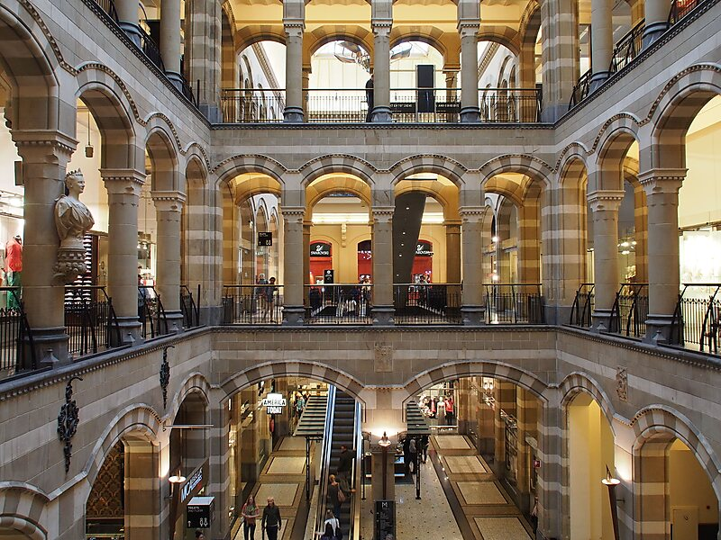

What It Is Like To Be Inside The Historic Anne Frank House

Magna Plaza is not only a historic and architecturally significant building, it is a great place to shop. Formerly a post office in the city of Amsterdam it is now a premier internationally known shopping center.